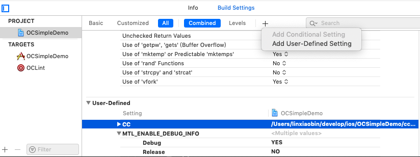

写在开头，如果条件允许，换个好点的开发机/打包机就实现编译速度质的提升了。
APP 开发达到一定规模后，都需要考虑优化打包效率的问题。笔者目前参与开发的 WeGamers 项目，体量算中等吧，不敢说是个很大的 APP。优化之前打包机的打包用时为 20~45min 不等，差距较大是因为有时候打包机会同时运行多个打包任务。按按平均每次打包用时为 30min 算，在4.0测试阶段，我们一共打了 120+ 个包，显而易见这里面的时间损耗有多大。特别是即将提审的最后阶段，修复一个问题要过很久才能完成验收，真的是心累。
目前优化打包效率的可行措施包括不限于以下几点：
- 减少编译指令集
- 编译缓存
- 硬件加速
- 依赖库二进制化
- 不生成 dSYM 文件
- 关闭编译优化
编译指令集
目前 Xcode 工程最多的情况下需要支持 4 个编译指令集：armv7、armv7s、arm64、arm64e，相当于需要完整编译 4 次代码。然而我们在测试阶段，只需要编译armv7、arm64就足够了。甚至如果不需要在 iPhone 5s 之前的设备进行测试，那测试包就只需要支持arm64，想想就让人觉得很愉快了。
ccache
Xcode 自带编译缓存，它是我们日常工作效率的保障，不过它偶尔会出现新代码不生效的问题，因此打包时我们都习惯先 clean 一下编译缓存。
ccache 是编译层面的缓存方案，了解到这个工具后，发现不少项目都已经引入到项目中，目前还没有遇到过缓存不一致的情况。根据笔者的测试，ccache 在缓存命中的情况下，的确能大幅度提升打包速度，但是它存在以下几个问题：
- 需要关闭 Enable Modules
- 缓存未命中的情况下，打包效率会降低，因为需要缓存编译后的文件
- PCH 引用的内容修改，会导致缓存失效
关闭 Enable Modules 对我们项目组的影响不大，如果能显著提升打包效率，关闭它还是可以接受的。然而因为历史原因，我们的项目重度依赖 PCH 文件，而这很影响 ccache 缓存命中。事实上，苹果很早就已经不推荐使用 PCH 文件了，如果读者的项目没有使用或者很少依赖 PCH，那么强烈安利 ccache，如果跟我们项目一样，那是否接入，还是要自行测试并且根据试用表现再做判断。
我们项目在接入 ccache 之前平均编译时长 30min，初步接入 ccache 后缓存命中平均编译时长 16min，缓存未命中完整编译时长需要 70min。看到这里，读者肯定会吐血，这也能叫大幅度提升？请耐心阅读下一段。
硬件加速
其实算下来提升是有的，命中缓存的情况下能提升50%，不过未命中缓存时，编译时长无法接受，命中缓存的情况下 16min 也超出了心理预期。如果不是笔者是在自己的开发机上测试过，知道编译的速度不至于这么慢，真的会直接放弃它。
那么问题出在哪里呢，经过排查，是打包机的硬盘写入速度太低。我们的打包机是 12 年末的 Mac mini，两年多前更换过固态硬盘，本来笔者还以为是机械硬盘太慢导致的，没想到是固态硬盘老化导致的。也是佩服大神了，直接更换内部硬盘，笔者只能接个外置的固态硬盘。友情提示，固态硬盘的正常使用寿命大概也就两三年，如果读者的打包机变慢了，建议测试一下。另外磁盘空间爆满，也会影响固态硬盘的写入速度，因此打包机需要定期清理磁盘。
更换完固态硬盘后，不使用 ccache 打包时长 12min，ccache 打包时长命中缓存 6min，未命中缓存 34min，命中缓存的情况下，打包效率还算让人满意，而未命中缓存时，打包时间还是长了点。但是请注意我们的打包机有多古老，它只是换了一块固态硬盘而已。如果使用 18 年中低配置的 Mac mini，打包时长分别为 3min 和 18min。
借用一句话总结一下，虽然说的很真实，但是软实力还是不可或缺呀。
在绝对的实力（硬件）面前，一切技巧（软件）都是浮云
依赖库二进制化
将第三方库和内部封装的固定模块二进制化，确实可以实现编译速度的较大提升。但是要将它实现为一个自动化甚至只是半自动化方案，都需要付出比较比较大的代价。笔者之前进行过一次不彻底的尝试，最终因为实用性而放弃，以后可能还会继续研究，有兴趣的读者可以了解一下 CocoaPods 的二进制化方案，难点在于要快速方便的在二进制库和代码之间切换，不能影响 Pod 库的引用方法。
dSYM 文件
打测试包时，不生成 dSYM 文件，的确能提升打包效率。测试时是否需要生成 dSYM 文件呢，大部分时候的确是没有必要的，就笔者的经验来说，内测阶段需要使用 dSYM 文件定位崩溃问题的情况，真的少之又少。但是也不好因为用的少，就不生成了，这个还是看各自需求吧。
编译优化
编译优化的基本原理是牺牲编译时性能，追求运行时性能。常见的优化有编译时删除无用代码，保留调试信息，函数内联等等。因此提升打包速度的秘诀就是反其道而行之，牺牲运行时性能来换取编译时性能。如果把 Optimize level 改成 O0，表示不做任何优化。
这里仅供参考，考虑到测试包和生产包的内容尽量一致比较好，笔者并未关闭编译优化。
ccache 使用
最后简单记录一下 ccache 的使用方法，它的接入成本真的很低。
安装 ccache
brew install ccache |
将下面的脚本保存在项目目录下，分别命名为ccache-clang和ccache-clang++
|
|
接下来修改工程配置，关闭Enable Modules选项，保证编译成功。
最后在项目的构建设置(Build Settings)中，添加一个常量CC，如果上面的脚本文件，放在工程根目录，值为 $(SRCROOT)/ccache-clang，否则自行调整路径。如果只希望 Debug 启用 ccache，可以把 Release 对应的 CC 值删除。

如果工程有使用 Pod 库，还需要在 Podfile 文件增加如下配置，然后执行pod install。
post_install do |installer_representation| |
完成接入工作后，试着编译项目，然后 clean 一下，再次编译试试，正常情况下二次编译的速度会很快。
可以使用ccache -s查看缓存的命中情况。
$ ccache -s |
总结
总得来说，这次打包加速的优化，还是有一些成果的，至于我们项目组最终是否保留 ccache，我个人认为还是有待观察的，但这并不是因为它不好，而是不一定适合我们项目。
参考文档：